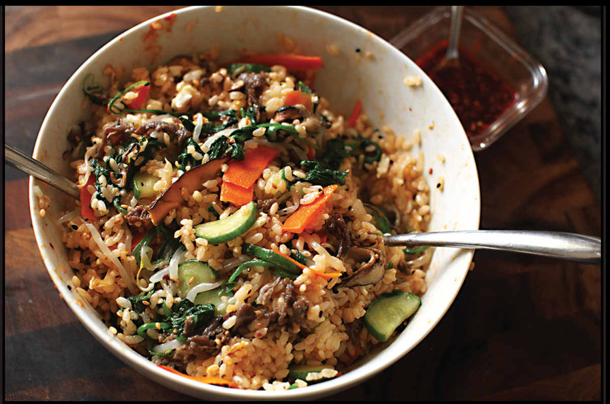

BIBIMBAP
Yield Serves 4 |
Active Time 45 minutes Total Time 45 minutes |
INGREDIENTS
For the Toppings:
Roasted sesame oil
Toasted sesame seeds
Minced garlic (optional)
Thinly sliced scallions (optional)
Light soy sauce or shoyu
2 cups (about 5 ounces) soybean or mung bean sprouts
2 cups (about 3 ounces) packed fresh spinach leaves
1 medium carrot, peeled, cut in half lengthwise, and thinly sliced on a bias
Kosher salt
1 Kirby or Japanese cucumber (or ½ American cucumber), peeled, split lengthwise, and cut into half-moons
4 ounces (120 g) shiitake mushroom caps, thinly sliced
4 ounces (120 g) ground beef or thinly sliced beef (such as beef you’d find for shabu or bulgogi at an Asian supermarket or thinly sliced Philly cheesesteak beef)
2 teaspoons (10 ml) honey
To Serve:
4 cups (800 g) cooked white short-grain rice
Raw egg yolks or sunny-side-up fried eggs
1 recipe Bibimbap Sauce (here)

DIRECTIONS
1 For the Toppings: Set up your topping station by putting out bottles and containers of sesame oil, sesame seeds, garlic (if using), scallions (if using), and soy sauce on the counter. Set a stack of 6 small bowls on the counter as well.
2 In a wok or a small saucepan, bring 2 cups (500 ml) water to a simmer. Add the bean sprouts and cook for 3 minutes. Fish them out with a slotted spoon, run them under cold water until you can handle them easily, then squeeze out excess moisture or spin them dry in a salad spinner. Place them in one of the small bowls.
3 Add the spinach to the simmering water and cook for 1 minute. Repeat the draining, cooling, and squeezing process and place the spinach in a second bowl.
4 Empty out the wok and return it to medium-high heat, allowing it to dry fully. Add 2 teaspoons (10 ml) sesame oil and heat until shimmering, then add the carrots, season with a pinch of salt, and stir-fry until heated through and lightly softened, about 1 minute. Transfer to a third small bowl.
5 Return the wok to medium-high heat. Add 2 teaspoons (10 ml) sesame oil and heat until shimmering, then add the cucumber, season with a pinch of salt, and stir-fry until heated through and lightly softened, about 1 minute. Transfer to a fourth small bowl.
6 Return the wok to medium-high heat. Add 2 teaspoons (10 ml) sesame oil and heat until shimmering, then add the mushrooms, season with a pinch of salt, and stir-fry until lightly browned, about 3 minutes. Transfer to a fifth small bowl.
7 Season the beef with 2 teaspoons (10 ml) soy sauce, the honey, 1 teaspoon (5 ml) sesame oil, some minced garlic (if using), and a sprinkle of sesame seeds. Return the wok to medium-high heat. Add 2 teaspoons (10 ml) sesame oil and heat until shimmering, then add the beef and stir-fry until lightly browned, about 3 minutes. Transfer to a sixth small bowl.
8 Now season all of the vegetables to taste with about 1 teaspoon sesame oil, a sprinkle of sesame seeds, a dash of soy sauce, and some minced garlic and/or scallions. Make sure you taste as you go.
9 To Serve with Plain Steamed Rice: Serve steamed rice in individual bowls at the table, allowing diners to pick and choose their toppings and finishing off each bowl with a fried egg or a raw egg yolk (if desired) and a drizzle of as much or as little sauce as they’d like (even if that’s none). Toss the bowl to mix the ingredients thoroughly before eating.
To Serve with Crispy Rice: Wipe out the wok and return it to high heat until lightly smoking. Add 1 tablespoon sesame oil and swirl to coat. Add the rice and press it down into an even layer. Cook over medium-low heat until the rice has a crispy coating on the bottom, about 1 minute (you can check by peeking underneath with a wok spatula). You can top the rice directly in the wok or transfer the rice to individual serving bowls, making sure to scoop out some of the crispy bottom for each serving.